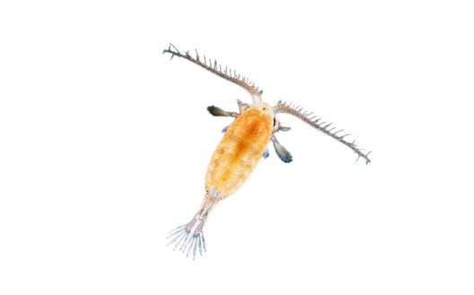
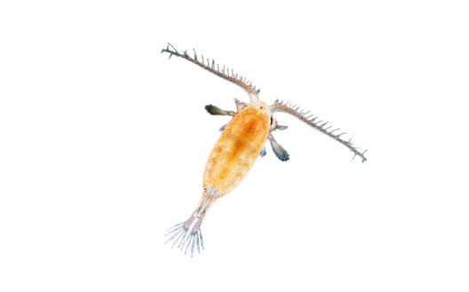
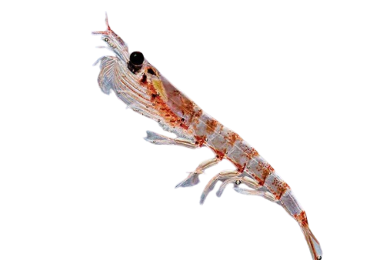
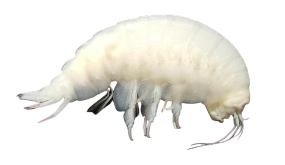
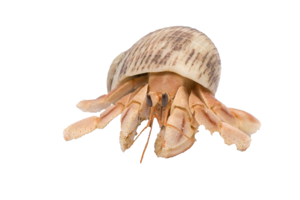

The Blessed Copepod
The children of the Lamb, sent from the gates of the Lord to infuse the world with his essence (Leo 301-324)
The Blessed Copepod
The children of the Lamb, sent from the gates of the Lord to infuse the world with his essence (Leo 301-324)
The Venerable Krill
Each is one in a krillion, yet equal in the blessings bestowed upon them (Leo 325-339)
The Holy Amphipod
A sinner among the creations of God, that stands to serve the lord in atonement for its nature. (Leo 340-347)
The Theologically Important but Nevertheless Somewhat Dubious Hermit Crab
A symbol of the contrast between evil and God - damned in its role, but holy in its purpose (Leo 350-381)